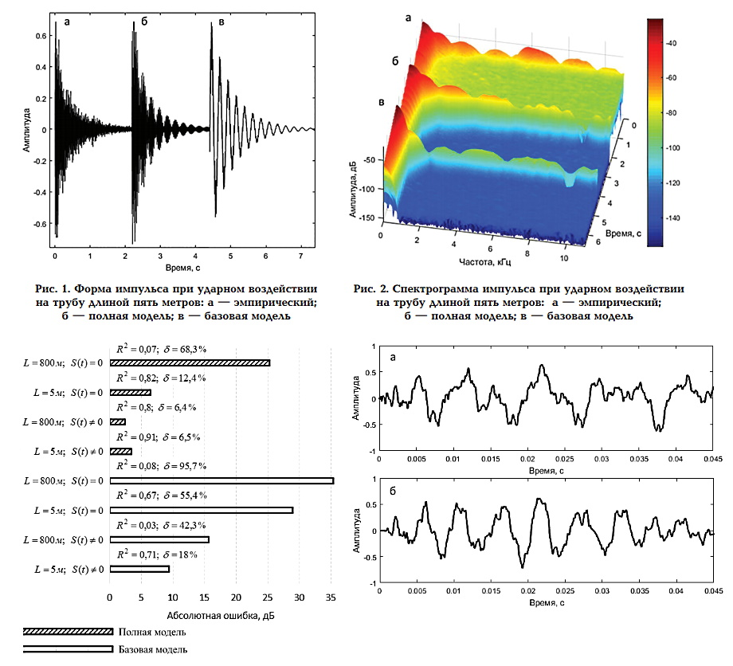

Моделирование акустического сигнала упругих колебаний, формируемых в трубопроводе точечным воздействием на его поверхность
- Impact. Theory and Physical Properties of Impacted Bodies. Goldsmith W., 1960
- Vibration problems in engineering. Timoshenko S.P., Young, D.H., Weaver W., 1967
- Релизация в Matlab
- Синтез формы акустического сигнала, фиксируемого на поверхности трубопровода при точечном воздействии
- Моделирование последовательностей импульсов
- Когерентное накопление сигналов для повышения отношения сигнал/шум
- Установка параметров трубопровода и источника воздействия
- Построение формы сигнала и амплитудно-частотного спектра
- Построение 3d-спектрограммы сигнала
- Наложение помехи на моделируемый сигнал
- Сохранение моделируемого импульса в wav-файл
- Координата воздействия и приема сигнала
- Масса трубопровода
- Протяженность трубопровода
- Толщина стенки трубы и ее диаметр
- Плотность материала стенки трубопровода
- Модуль Юнга
- Коэффициент жесткости основания трубопровода
- Длительность контакта источника колебаний с поверхностью трубы
- Число мод
- Частота дискретизации сигнала
- Длительность сигнала

Оценка адекватности моделей сравнением с эмпирическими сигналами

Выделение импульса на фоне помехи когерентным накоплением

Выражение для "базовой" модели генерации амплитуд сигнала

Выражение для "полной" модели генерации амплитуд сигнала
Сгенерированный импульс для трубы длиной 5 метров
Импульс, записанный на трубе длиной 5 метров
Сгенерированный импульс для трубы длиной 190 метров
Импульс, записанный на трубопроводе протяженностью 190 метров
Модели базируются на работах:
Описание
Параметры модели:
Публикации по проекту
Математическая модель упругих колебаний трубопровода при ударном воздействии / "Международный научно-исследовательский журнал" – 2017
Полная модель колебаний трубопровода при ударном воздействии / журнал "Омский научный вестник" - 2018
Оценка адекватности моделей колебаний трубопровода при ударном воздействии / журнал "Омский научный вестник" - 2018
Модель колебаний трубопровода при несанкционированном воздействии / журнал "Омский научный вестник" - 2019
Активный помехоустойчивый виброакустический способ контроля состояния магистрального трубопровода / диссертация - 2017
Активный помехоустойчивый виброакустический способ контроля состояния магистрального трубопровода / автореферат - 2017